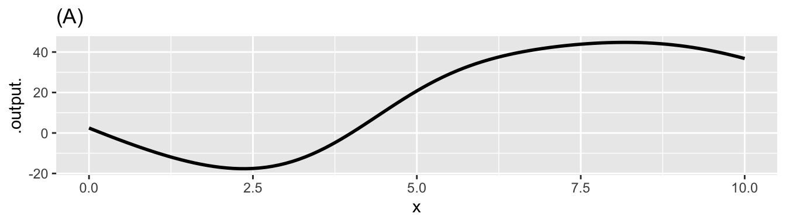

MOSAIC Week 16 Assignment
Accumulating Wind Power
linear algebra
Remember to hand in your work …
At any point, you can submit your answers by collecting them and uploading them to the class site.
No answers yet collected
If the answers that have been loaded automatically are not yours, press this button before starting your work:
Chapter 37
Chapter 38
Exercise 1 Here is a square-wave function defined on the domain \(-1 \leq t \leq 1\).
Here are 8 orthogonal basis functions on \(-1 \leq t \leq 1\). - \(c_0 \equiv 1\) - \(c_1 \equiv \cos(1 \pi t)\) - \(c_2 \equiv \cos(2 \pi t)\) - \(c_3 \equiv \cos(3 \pi t)\) - \(c_4 \equiv \cos(4 \pi t)\) - \(c_5 \equiv \cos(5 \pi t)\) - \(c_6 \equiv \cos(6 \pi t)\) - \(c_7 \equiv \cos(7 \pi t)\)
- Part 1
-
Implement \(c_0()\) through \(c_7()\) in R, calling them
c0(),c1(), and so on.
- Part 2
- Pick two of the functions from Part 1 and write tests to confirm that they have unit length.
- Similarly, pick three of the functions and confirm that they are mutually orthogonal.
- Part 3
- You are going to find the linear combination of the basis functions \(c_0()\), \(c_1()\), … that best approximates the square-wave function in the introduction to this problem. Since the basis functions are orthonormal (that is, mutually orthogonal and each of unit length), each coefficient can be found by multiplying the square wave by that basis function and integrating over the interval \(-1 \leq t \leq 1\)
- Part 4
- In Part 3 you computed 8 coefficients, one for each basis function. Construct a new function that is the corresponding linear combination of the basis functions. Plot out the linear combination and compare it to the square wave itself. What features of the square wave does the linear combination capture and in what ways is it systematically different from the square wave?
Exercise 2 Consider these functions/vectors on the domain \(0 \leq t \leq 1\):
- \(s_1(t) \equiv \sin(2\pi t)\)
- \(s_2(t) \equiv \sin(2 \pi 2 t)\) (that is, \(\omega = 2\))
- \(s_3(t) \equiv \sin(2 \pi 3 t)\) (that is, \(\omega = 3\))
- \(c_0(t) \equiv \cos(\pi t)\)
- \(c_1(t) \equiv \cos(2 \pi t)\)
- \(c_2(t) \equiv \cos(2 \pi 2 t)\)
In answering the following questions, do your calculations in the R chunk and put your answers in the text-submission box.
This box connects to the “collect answers” button.
Plot out each of the functions on the domain. How many complete cycles does each function complete as \(t\) goes from 0 to 1?
Thinking of the functions as vectors, what is the length/magnitude of each function?
All of the functions are mutually orthogonal except one. Which is the odd one out? (Hint: If the dot product is zero, the vectors are orthgonal.)
Chapter 48
{{< include _Chap48.qmd >}}
Chapter 35
Exercise 3 (A simple heat engine) In the 1660s, John Boyle made use of then-new instrumentation to measure gas pressure. He discovered what’s now called Boyle’s Law, which says that, at constant temperature in a closed system, pressure times volume is a constant:
\[PV = const\] In the 1720s, Daniel Fahrenheit developed the first reliable thermometer consisting of a column of mercury in a glass straw. He developed a temperature scale which divided the range from freezing to boiling into 180 small units, which he called “degrees,” as was traditional in measuring angles. (In 1742, Anders Celsius created another scale with freezing at 0 and 100 small units—still called “degrees”—between freezing and boiling.
With the availability of reliable thermometers, scientists started to consider the role of temperature in the relationship between pressure and volume. Their many discoveries were eventually synthesized into a “combined gas law” and then into an “ideal gas law” which famously states: \[PV = nRT .\] Here, \(n\) is “amount” of gas, quantified as the number of moles of the gas in the container, \(T\) is temperature, and \(R\) is the “ideal gas constant”: \[R = 8.314 \text{J}/(\text{K}\ \text{mol})\] The “mol” cancels out the dimension of \(n\), the \(K\) cancels out the dimension of \(T\), leaving us with \(PV\) having the dimension of energy (Joules). The temperature \(T\) is measured in degrees Kelvin, which is just like Celsius but moving the location of 0 from freezing to … Well … the hypothetical temperature when \(PV=0\), which can be estimated by extrapolating measurements of \(PV(T)\) (that is, \(PV\) as a function of \(T\)) to the \(T\) where \(PV = 0\).
- It is convenient to have specific units in mind for pressure and volume. Since \(P V\) gives energy, let’s arrange \(P\) and \(V\) to have units such that when multiplied the result is Joules. What is the expression of the dimension Joule in terms of the SI system, that is, time in seconds, length in meters, and mass in kg? Hint: use the above paragraph and knowing that the units for energy are consistent for potential, kinetic, or other types of energy.
PV-units1
- In the SI units system, volume has units of cubic meters: \(m^3\). What are the SI units for pressure in terms of kg, m, and s? The units of your answer to this question times the units for pressure should be equivilent to your answer from the previous question.
PV_units2
For use in calculus, it is helpful to re-write the Ideal Gas Law in functional form. There are several ways to do this. For instance, if we wanted to measure the number of moles of gas in a container, we could use the function \(n(P, V, T) = PV/RT\). Here, we will focus on pressure as a function of the other quantities: \[P(n, V, T) = nRT/V.\] Now consider a very simple machine consisting of a cylinder, closed on one end and sealed by a movable piston at the other, as in this picture.

The machine in the picture is more complicated than the simple machine we want to model. The picture includes two small valves at the top of the cylinder connected each to a pipe.
Our machine has no valves and no pipes. The cylinder is charged with gas when it is manufactured. After that, nothing material goes in or out of the closed cylinder/piston system.
When you push on the cylinder, the volume available for the gas gets smaller and the pressure increases. When you let the cylinder push on you, the volume available gets bigger and the pressure decreases. The amount of gas, \(n\), never changes. For simplicity, we will imagine that \(n=1\) and that the gas is N\(_2\). This means the mass of the gas is 0.028 kg.
And, to simplify even more, let’s insist that the temperature of the cylinder and its gaseous content does not change from room temperature: 293\(^\circ\) Kelvin.

If you start in a high-volume, low-pressure state and push the piston to move to a low-volume, high-pressure state at the same temperature, you will be putting energy into the machine.
The “area” of each little box in the graph, that is, pressure times volume,
- How much energy (in Joules) corresponds to one small rectangle of area in the graph?
PV3
- By counting rectangles in the graph, estimate how much energy needs to be put into the machine when the volume changes from 7.5 m\(^3\) to 2.5 m\(^3\) at a temperature of 300 K?
PV4
Now that you have compressed the gas in the cylinder, by doing work on it, let’s heat up the machine to 1200K.
- What will be the pressure of the gas when the volume of the machine is 2.5 m\(^3\) at temperature 1200 K? (The units will be kg m$^{-1} \(s^{-2}\))
PV5
- Starting with the machine at 1200K and a volume of 2.5 m\(^3\), how much energy will the machine transfer to you when it expands to 7.5 m\(^3\)? Estimate this by counting squares in the graph.
PV6
The net work done by the machine in completing the cycle, shifting from compression at low temperature to expansion at high temperature, is the difference between the energy put out by the machine when expanding and the energy put into the machine to compress the gas. Such a machine is called a “heat engine” since it turns a source of high temperature and a source of low temperature into energy.
Evaluate the code in Listing 1. The first line defines a function \(P(V, T)\) with default \(n=1\) mole of gas. Anti-differentiate \(P()\) with respect to \(V\) then calculate the energy needed to compress the cylinder at the low temperature, that is \[\int_{7.5}^{2.5} P(V, T=300) dV .\] Call this numerical result compress_energy.
Similarly, calculate the energy done by the machine in the high-temperature expansion \[\int_{2.5}^{7.5} P(V, T=1200) dV .\] Call this numerical result expand_energy.
You may want to make a graph of your \(P(V, T)\) function to check that it is right. Also, check that the integrals are right by comparing them to the rough estimate you made earlier by counting squares.
Exercise 4 A function windspeed(t) is being provided to you. It records wind speed at the site of a wind-turbine farm over one day, that is, \(0 \leq t \leq 24\) hours. The function speed2power(s) is the production function for the brand of wind turbine used at the farm: the input is speed in miles per hour, the output is in kilowatts. (Both these functions were created for this exercise. They are not about a real turbine at a real wind farm, but are somewhat realistic.) Hint: you can nest a function inside of another function.
Use the following chunk to graph the functions windspeed() and speed2power() over a sensible domain.
Your task is to find the total energy generated over the 24-hour period by the turbine. Reminder: energy \(E\) is electric power multiplied by time. Or, more usefully for this problem, the increment energy \(dE\) generated at time \(t\) is the product of power at time \(t\) multiplied by the increment of time \(dt\), that is, \(dE = p(t) dt\). Consequently, \[E = \int_\text{morning}^\text{night} p(t) dt\] where “morning” should really be 00:00 h and night 24:00 h on the day in question.
We don’t have an algebraic formula for windspeed(t) even though it is a function. You can use antiD() to find the anti-derivative of the electric power function.
The answer you compute should be saved to the name result. The units will be in kWh – kilowatt hours.
The energy function in the above chunk takes time as an input and produces as output the total energy generated up to that time. But when was the starting time? It was not specified!
At first, this might seem like nonsense: What’s the point of knowing the total energy up to time \(t\) if you don’t know when was the beginning of the accounting period.
- Explain what about the second line of the chunk effectively lets you define the start of the accounting period.
- Wind turbines of this type have a maximum power rating. You should be able to determine the max rating by examining a graph of
speed_to_power(). Was this rating exceeded at any point during the day?
wind-power-1
- At the maximum power rating, what’s the theoretical maximum amount of energy produced by the turbine over a 24-hour day?
wind-power-2
- About what fraction of the theoretical maximum energy did the wind turbine generate over the 24-hour period?
wind-power-3
- A peak time for residential energy consumption is from 7 am to 9 am. The price at which you, the energy producer, can sell electrical energy to the grid operator is, say, $0.09 per kilowatt-hour. At that price, how much would the energy produced from 7-9 am be worth?
wind-power-4
- What’s the average wind speed over the 24-hour period?
wind-power-5
- Wind speed fluctuates a lot, but imagine that the wind blew steadily at the average wind speed from the previous problem. How much energy would be generated over the 24-hour period?
wind-power-6
NEED TO INTEGRATE SHINY APP
Exercise 5 You are visiting friends whose house has solar panels on the roof. In sunshine, these generate power. You friends use some of that power immediately for cooking, lighting, and such. Any power generated above those needs gets stored in a battery. Any power used above the solar generation gets supplied by the battery.
Over the course of a day, your use of power fluctuates (you use the toaster, open the refrigerator, etc). Similarly, the solar generation fluctuates as clouds pass by and the sun rises and sets in the sky. The amount of energy stored in the battery fluctuates over the day as you consume energy in your home and produce it with the solar panels.
The unit used for electrical power is a “kilowatt” (kW). An old-fashioned incandescent light bulb consumes about 0.1 kW while lighted, a modern LED bulb generates about the same amount of light using only 0.01 kW. A refrigerator uses about 0.1 kW while a hair-dryer uses about 1 kW when it is running.
Batteries store energy. The usual unit for energy is “kilowatt-hour” (kWh). A refrigerator will, over a 24-hour day, use 0.1 * 24 = 2.4 kWh. Power multiplied by time duration gives energy. If the power were constant, the energy could be calculated by a simple multiplication of the power over the duration. Since power fluctuates, we cannot do the calculation with ordinary multiplication. Instead, we have to integrate power over time.
For this activity, use the “Solar-panels” App.
Note in draft
Convert the App to ShinyLive and embed here.
- Why is it called “net production” instead of just “production?”
panda-tear-cotton-1
- The bottom graph shows energy accumulated in the battery since midnight. What does it mean that the energy accumulated is negative?
panda-tear-cotton-2
- During the interval from 05:00 to 20:00, how much did the energy stored by the battery change? Highlight that interval in the beeps graph.
panda-tear-cotton-3
- Suppose the battery was holding 20 kWh at 00:00. How much energy was it holding at 15:00?
panda-tear-cotton-4
- When you choose a time interval in the beep graph, how come the energy stored (in kWh) is displayed as an area in the top graph? Keep in mind that the vertical scale of the top graph is kW, not kWh.
panda-tear-cotton-5
- How come two different colors are used to display the “area” under the net power curve?
panda-tear-cotton-6
Exercise 6 Suppose the continuous function \(f(x)\) is positive on \(x \in [0, 4]\) and negative on \(x \in [4, 8]\). Let \[F(x) \equiv \int_0^x f(u) du.\] In addition, suppose \(\int_0^8 f(x)dx < 0\).
Mark each statement as True or False.
- \(F(x)\) has to be positive on [0,4] and negative on [4, 8].
ups-and-downs-1
- \(F(x)\) must cross the x-axis at least once in the interval [0, 8].
ups-and-downs-2
- \(F(0) < F(8)\).
ups-and-downs-3
- \(F(x)\) is concave up on [0, 4] and concave down on [4, 8].
ups-and-downs-4
- \(F(x)\) has a local maximum at x = 4.
ups-and-downs-5
- \(F(x)\) has a point of inflection at x=4.
ups-and-downs-6
Exercise 7
- Find the antiderivative \[\int \frac{x^2+x+1}{x}\ dx\ .\]
seaweed-bend-socks-1
- Find the antiderivative \[\int \left(\frac{3}{t} - \frac{3}{t^2} \right)dt\ .\]
seaweed-bend-socks-2
- Find the value of \[\int_2^4(2x+3)dx\ .\]
seaweed-bend-socks-3
- What is the approximate value of \[\int_2^4 dnorm(x)dx\ ?\] (Hint: You will need an R session to do the numerical calculation.
seaweed-bend-socks-4
Exercise 8 The KC-46 is an airborne fuel tanker that can receive or dispense fuel. Suppose \(x(t)\) tracks a KC-46’s fuel transfer rate, in pounds per minute, where \(t\) is measured in minutes from the start of the mission. Note that \(0 < x(t)\) when the KC-46 is receiving fuel from another tanker and \(x(t)<0\) when the KC-46 is offloading fuel to a supported aircraft.
The function \(b(t)\) tracks the KC-46’s fuel burn rate, also measured in pounds per minute, with the same interpretation of \(t\). Note that \(b(t)\) can never be negative (i.e. \(0 \leq b(t)\))
- Part 1.
- Which of the following is the proper representation of the KC-46’s fuel state \(m\) minutes after mission start?
buck-forgive-canoe-1
- Part 2.
- What is the meaning of \[\int_0^{120} x(t)dt=40,000\ ?\] Keep in mind that there are 60 minutes in 1 hour, so 120 minutes is 2 hours.
buck-forgive-canoe-2
Exercise 9 The following chunk gives the function \(A(x, y)\) for the differential \(A(x,y)\,dy\,dx\) of the surface area of the tent at point (x,y).
This is more than 4 times the ground area of the domain \(-5 < x < 5, \ -5 < y < 5\) over which the tent has been raised. You can get some feel for why this is by looking at the several graphs of slices of the tent. The “ground length” in each of these plots is 10 (since they run from \(y=-5\) to \(5\).) The length of the tent material itself is given by the length of the black curve in each plot.
Modify the code in Listing 2 to find the surface area of the tent over the domain \(3 < x < 5, \ 0 < y < 3\).
- Part 1.
- What is the area (in square meters) of the smaller domain itself? (As opposed to the surface area of the tent raised over that domain. You don’t need the codebox for this question.)
tent-area-6ZQRyG
- Part 2.
- What is the surface area (in square meters) of the part of the tent raised over the small area?
tent-area-GKRslr
Essay: The ratio of tent surface area to ground area in the small region of the tent is only about 2. For for the tent as a whole, the ratio is much bigger: about 4. Look at the contour plot of the tent height and explain why there is such a big difference in ratios.
Splines
Find the shape of the solar power curve for a given week in the year. Do this for several weeks during the year. Combination of wrangling to pull out the weeks (across all years) then finding the max at each timestamp, then splining through this to find the cloudiness.
DRAFT
for a possible solar power problem For instance, if I had a function (‘solarpanelpower’) that calculates the amount of power a solar panel generates and another function (‘sunlight’) that tells me the amount of sunlight at time of the day (‘TOD’). I could evaluate this in one step like the following: ‘solarpanelpower(sunlight(TOD))’. This would give me the amount of power from the solar panel based upon the time of the day. :::